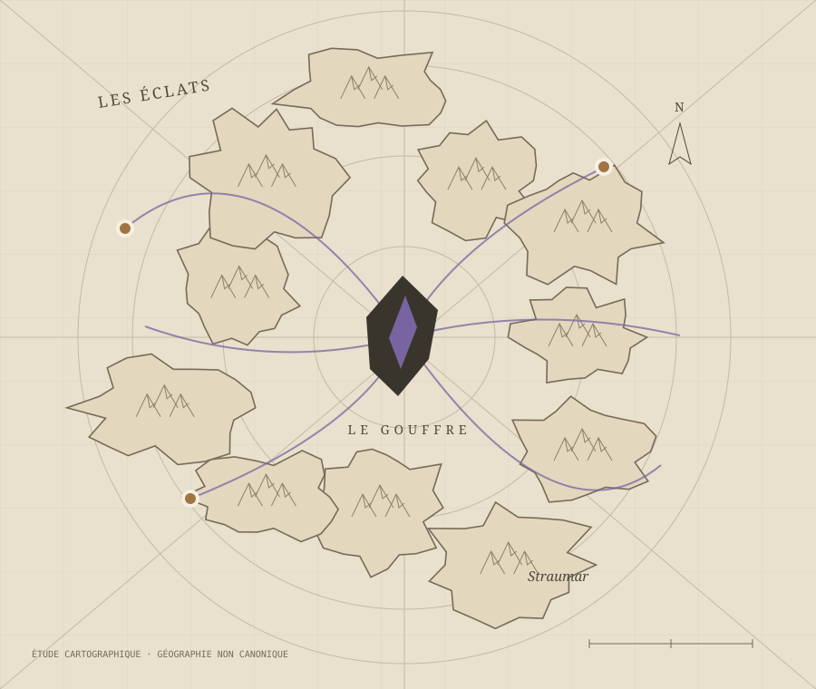

Bâtir dans la durée.
Bois, Fer, Mana, Nourriture : organisez vos ressources et faites grandir votre cité, du premier Hameau aux ambitions d’un empire.
Trois mille ans après la Rupture.
Fondez votre cité sur un Éclat, développez votre royaume et menez vos héros face aux forces qui s’éveillent.
Rejoindre les premiers voyageurs ↗
ATLAS DES ÉCLATSKalendrath est un jeu de gestion d’empire en cours de création. La construction, les héros et les affrontements contre les forces du monde sont au cœur du projet.
Bois, Fer, Mana, Nourriture : organisez vos ressources et faites grandir votre cité, du premier Hameau aux ambitions d’un empire.
Votre héros gouverne et part en mission. Ses talents et son équipement accompagnent la progression de votre royaume.
Des hordes d’orcs et de gobelins s’éveillent. Le projet place les défis PvE et la coopération au premier plan.
Kaelhelm a disparu. Les Straumar, courants de mana qui traversent le monde, parcourent désormais des terres fracturées. Autour des Obélisques anciens, les royaumes humains prennent racine.
« Une perturbation parcourt les Straumar. Sur les Éclats, les premières défenses se lèvent. »Texte d’ambiance proposé pour la vitrine.
Des étapes concrètes, sans date annoncée à ce stade. La direction artistique et la nouvelle interface sont le chantier actuel.
Direction artistique, système visuel et maquettes. Puis le premier écran Héros dans la nouvelle interface.
Ressources, bâtiments, recherches et premiers adversaires PvE. Préparer la boucle quotidienne.
Inviter des testeurs par vagues, recueillir leurs retours et ajuster le jeu.
Préinscriptions à la bêta avec une date annoncée, bêta à durée limitée, puis ouverture du premier serveur.
Préinscrivez-vous au projet pour recevoir les nouvelles du développement et les annonces des prochaines phases de test.